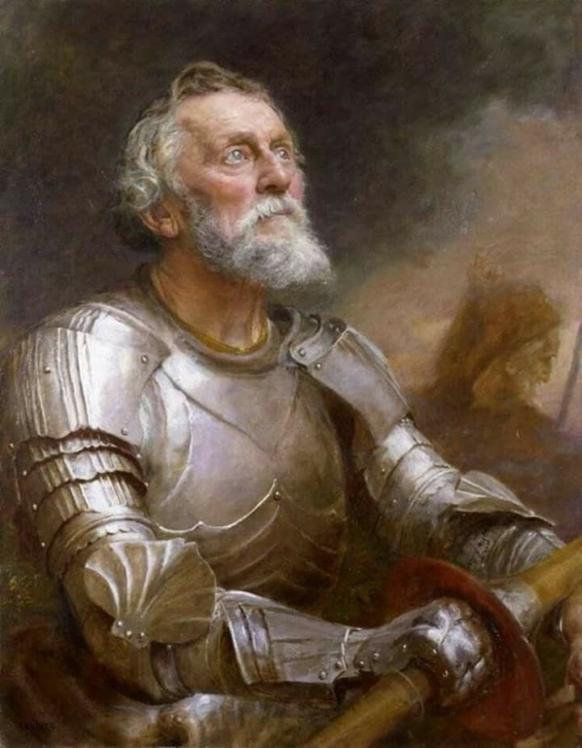

Desocupados Lectores,
Fue un placer conoceros pero es tiempo para volver a mi tiempo. Hace cuatro meses que no he visto a mi fiel escudero Sancho y como todas las aventuras, la mía también necesita acabarse.
La doncella Emma y yo, no estábamos seguros de cómo podría volver a mi tiempo, pero decidimos que como he llegado a este tiempo cuando iba en la cueva de Montesinos, suponíamos que el regreso sería de la misma manera… Por eso, necesitaba viajar a España tomando lo que llamáis “el avión". Antes que los trolls lleguen para preguntarme cómo he viajado sin tener identificación, quiero aseguraros que la doncella Emma ha arreglado todo.
¡Qué maravilloso son vuestros aviones! Espero que Sancho esté aquí para experimentar esta serpiente con alas. También la bestia no estaba cansada durante todo el viaje. ¡Rocinante nunca podría! Después de once horas largas, llegamos a Madrid y viajamos a la Cueva de Montesinos el día siguiente. Estoy esperando que la noche llegue para ir al interior, escribiendo estas últimas palabras a vosotros.
La doncella Emma, habiendo leído la segunda parte de mi historia, me ha dado algunos consejos antes de que nos separemos. Me ha dicho de no confiar en todo el mundo que Sancho y yo nos vamos a encontrar. Aparentemente hay algunos que son crueles y peor que los encantadores que me torturan.
Además, me ha dicho que encontraré a un caballo que vuela llamado Clavileno. ¡Qué interesante! Al final, he aprendido que Sancho sería gobernador de una isla como lo había prometido. Emma me ha preguntado si quería saber el fin de mi propia historia, y lo rechacé. Prefiero vivirlo en vez de tener un “spoiler”.
Aunque estoy fascinado por vuestra sociedad, vuestros encantadores, y vuestras “memes”, hay gente que necesita mi ayuda en el pasado. No tengo ninguna duda que los caballos modernos van hacer todo para protegeros.
¡No dejéis de creer!
Despedida,
Don Quijote de la Mancha - El Caballero de Los Leones
 Imagen vía PinterestImagen de fondo por iiyo_00 vía Pinterest